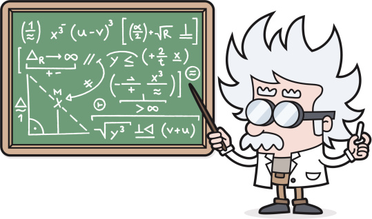

Algebra and Trigonometry at a higher level
Precalculus is a mathematical course that serves as a foundation for calculus. It is designed to help students understand the concepts and skills needed to succeed in calculus and other higher-level math courses. Precalculus bridges the gap between algebra, geometry, and the more advanced study of calculus by focusing on topics like functions, complex numbers, trigonometry, and analytic geometry.
By the end of a precalculus course, students will have a deeper understanding of functions and their behaviors, as well as the tools needed for further study in calculus and other advanced mathematical fields.
For more information and further reading on Pre-Calculus: